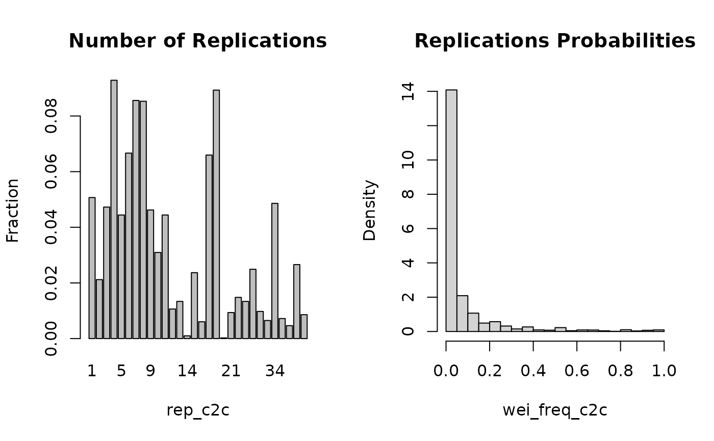

cat2cat procedure
The introduced cat2cat procedure was designed to offer an easy and clear interface to apply a mapping (transition) table which was provided by the data maintainer or built by a researcher. The objective is to unify an inconsistent coded categorical variable in a panel dataset, where a transition table is the core element of the process.
Examples of datasets with such inconsistent coded categorical variable are ISCO (The International Standard Classification of Occupations) or ICD (International Classification of Diseases) based one. The both classifications are regularly updated to adjust to e.g. new science achievements. More clearly we might image that e.g. new science achievements brings new occupations types on the market or enable recognition of new diseases types.
The categorical variable encoding changes are typically provided by datasets providers in the mapping (transition) table form, for each time point the changes occurred. The mapping (transition) table is the core element of the procedure A mapping table conveys information needed for matching all categories between two periods of time. More precisely it contains two columns where the first column contains old categories and the second column contains the new ones. Sometimes a mapping (transition) table has to be created manually by a researcher.
The main rule is to replicate the observation if it could be assigned to a few categories. More precisely for each observation we look across a mapping (transition) table to check how the original category could be mapped to the opposite period one. Then using simple frequencies or statistical methods to approximate weights (probabilities) of being assigned to each of them. For each observation that was replicated, the probabilities have to add up to one. The algorithm distinguishes different mechanics for panel data with and without unique identifiers.
cat2cat function
The cat2cat::cat2cat function is the implementation of the cat2cat procedure. The cat2cat::cat2cat function has three arguments data, mappings, and ml. Each of these arguments is of a list type, wherein the ml argument is optional. Arguments are separated to identify the core elements of the cat2cat procedure. Although this function seems complex initially, it is built to offer a wide range of applications for complex tasks. The function contains many validation checks to prevent incorrect usage. The function has to be applied iteratively for each two neighboring periods of a panel dataset. The cat2cat::prune_c2c function could be needed to limit growing number of replications.
Core elements
There are 3 important elements:
- Mapping (Transition) table, possibly a few for longer panels. Typically provided by the data maintainers like a statistical office.
- Type of the data - panel dataset with unique identifiers vs panel dataset without unique identifiers and aggregate data vs non-aggragate data.
- Direction of a mapping process, forward or backward - a new or an old encoding as a base one.
Data
occup dataset is an example of unbalance panel dataset. This is a simulated data although there are applied a real world characteristics from national statistical office survey. The original survey is anonymous and take place every two years.
trans mapping (transition) table contains mappings between old (2008) and new (2010) occupational codes. This table could be used to map encodings in both directions.
Dataset without unique identifiers
There were prepared two graphs for forward and backward mapping. These graphs present how the cat2cat::cat2cat procedure works, in this case under a panel dataset without the unique identifiers and only two periods.

Backward Mapping

Forward Mapping
Example - 2 periods
## cat2cat
occup_simple <- cat2cat(
data = list(old = occup_old, new = occup_new, cat_var = "code", time_var = "year"),
mappings = list(trans = trans, direction = "backward")
)
## with informative features it might be usefull to run ml algorithm
## currently only knn, lda or rf (randomForest), a few methods could be specified at once
## where probability will be assessed as fraction of closest points.
occup_2 <- cat2cat(
data = list(old = occup_old, new = occup_new, cat_var = "code", time_var = "year"),
mappings = list(trans = trans, direction = "backward"),
ml = list(
data = occup_new,
cat_var = "code",
method = "knn",
features = c("age", "sex", "edu", "exp", "parttime", "salary"),
args = list(k = 10)
)
)plot_c2c offers a summary of the replication process.

Example for the 2 period panel dataset.
# mix of methods
occup_2_mix <- cat2cat(
data = list(old = occup_old, new = occup_new, cat_var = "code", time_var = "year"),
mappings = list(trans = trans, direction = "backward"),
ml = list(
data = occup_new,
cat_var = "code",
method = c("knn", "rf", "lda"),
features = c("age", "sex", "edu", "exp", "parttime", "salary"),
args = list(k = 10, ntree = 50)
)
)
# cross all methods and subset one highest probability category for each subject
occup_old_mix_highest1 <- occup_2_mix$old %>%
cross_c2c(.) %>%
prune_c2c(., column = "wei_cross_c2c", method = "highest1")Correlations between different methods of assesing weights are presented.
# correlation between ml models and simple fequencies
occup_2_mix$old %>%
select(wei_knn_c2c, wei_rf_c2c, wei_lda_c2c, wei_freq_c2c) %>%
cor()## wei_knn_c2c wei_rf_c2c wei_lda_c2c wei_freq_c2c
## wei_knn_c2c 1.0000000 0.8644292 0.8350984 0.8989887
## wei_rf_c2c 0.8644292 1.0000000 0.8788610 0.8761021
## wei_lda_c2c 0.8350984 0.8788610 1.0000000 0.8807702
## wei_freq_c2c 0.8989887 0.8761021 0.8807702 1.0000000Example - More than 2 periods
When we have to map more than 2 time points, then cat2cat has to be used iteratively. However when only three periods have to be mapped, the middle one could be used as the base one.
If we have to apply many different mapping (transition) tables over time then pruning methods could be needed to limit the exponentially growing number of replications. Such pruning methods are used to remove some of the replications, for example, leaving only one observation with the highest probability for each observation replication. Another strategy might be removing the zero probability replications. As such, pruning methods could be used before transferring a dataset to the next iteration to reduce the problem of the exponentially growing number of observations.
Example with 4 period and only one mapping table:
Backward
Unification Process:
# 2010 -> 2008
occup_back_2008_2010 <- cat2cat(
data = list(old = occup_2008, new = occup_2010, cat_var = "code", time_var = "year"),
mappings = list(trans = trans, direction = "backward")
)
# optional, give more control
# the counts could be any of wei_* or their combination
freq_df <- occup_back_2008_2010$old[, c("g_new_c2c", "wei_freq_c2c")] %>%
group_by(g_new_c2c) %>%
summarise(counts = round(sum(wei_freq_c2c)))
# 2008 -> 2006
occup_back_2006_2008 <- cat2cat(
data = list(
old = occup_2006,
new = occup_back_2008_2010$old,
cat_var_new = "g_new_c2c",
cat_var_old = "code",
time_var = "year",
freqs_df = freq_df
),
mappings = list(trans = trans, direction = "backward")
)
occup_2006_new <- occup_back_2006_2008$old
occup_2008_new <- occup_back_2008_2010$old # or occup_back_2006_2008$new
occup_2010_new <- occup_back_2008_2010$new
# use ml argument when applied ml models
occup_2012_new <- dummy_c2c(occup_2012, "code")
final_data_back <- do.call(rbind, list(occup_2006_new, occup_2008_new, occup_2010_new, occup_2012_new))Valiation of global counts and per variable level counts:
# We persist the number of observations
counts_new <- final_data_back %>%
cross_c2c() %>%
group_by(year) %>%
summarise(
n = as.integer(round(sum(wei_freq_c2c))),
n2 = as.integer(round(sum(wei_cross_c2c)))
)
counts_old <- occup %>%
group_by(year) %>%
summarise(n = n(), n2 = n(), .groups = "drop")
identical(counts_new, counts_old)## [1] TRUEForward
Unification Process:
A few categories levels are not in the trans table, lacking levels setdiff(c(occup_2010$code, occup_2012$code), trans$new). We could solve it by adding a “no_cat” level for each of them in the trans table.
trans2 <- rbind(trans, data.frame(old = "no_cat",
new = setdiff(c(occup_2010$code, occup_2012$code), trans$new)))Of course the best solution will be to get these mappings from the data provider
# 2008 -> 2010
occup_for_2008_2010 <- cat2cat(
data = list(old = occup_2008, new = occup_2010, cat_var = "code", time_var = "year"),
mappings = list(trans = trans2, direction = "forward")
)
# optional, give more control
# the counts could be any of wei_* or their combination
freq_df <- occup_for_2008_2010$new[, c("g_new_c2c", "wei_freq_c2c")] %>%
group_by(g_new_c2c) %>%
summarise(counts = round(sum(wei_freq_c2c)))
# 2010 -> 2012
occup_for_2010_2012 <- cat2cat(
data = list(
old = occup_for_2008_2010$new,
new = occup_2012,
cat_var_old = "g_new_c2c",
cat_var_new = "code",
time_var = "year",
freqs_df = freq_df
),
mappings = list(trans = trans2, direction = "forward")
)
# use ml argument when applied ml models
occup_2006_new <- dummy_c2c(occup_2006, "code")
occup_2008_new <- occup_for_2008_2010$old
occup_2010_new <- occup_for_2008_2010$new # or occup_for_2010_2012$old
occup_2012_new <- occup_for_2010_2012$new
final_data_for <- do.call(rbind, list(occup_2006_new, occup_2008_new, occup_2010_new, occup_2012_new))Valiation of global counts and per variable level counts.
# We persist the number of observations
counts_new <- final_data_for %>%
cross_c2c() %>%
group_by(year) %>%
summarise(
n = as.integer(round(sum(wei_freq_c2c))),
n2 = as.integer(round(sum(wei_cross_c2c)))
)
counts_old <- occup %>%
group_by(year) %>%
summarise(n = n(), n2 = n(), .groups = "drop")
identical(counts_new, counts_old)## [1] TRUEBackward and ML
Unification Process:
# 2010 -> 2008
occup_back_2008_2010 <- cat2cat(
data = list(old = occup_2008, new = occup_2010, cat_var = "code", time_var = "year"),
mappings = list(trans = trans, direction = "backward"),
ml = list(
data = dplyr::bind_rows(occup_2010, occup_2012),
cat_var = "code",
method = c("knn"),
features = c("age", "sex", "edu", "exp", "parttime", "salary"),
args = list(k = 10)
)
)
# 2008 -> 2006
occup_back_2006_2008 <- cat2cat(
data = list(
old = occup_2006,
new = occup_back_2008_2010$old,
cat_var_new = "g_new_c2c",
cat_var_old = "code",
time_var = "year"
),
mappings = list(trans = trans, direction = "backward"),
ml = list(
data = dplyr::bind_rows(occup_2010, occup_2012),
cat_var = "code",
method = c("knn"),
features = c("age", "sex", "edu", "exp", "parttime", "salary"),
args = list(k = 10)
)
)
occup_2006_new <- occup_back_2006_2008$old
occup_2008_new <- occup_back_2008_2010$old # or occup_back_2006_2008$new
occup_2010_new <- occup_back_2008_2010$new
occup_2012_new <- dummy_c2c(occup_2012, cat_var = "code", ml = c("knn"))
final_data_back_ml <- do.call(rbind, list(occup_2006_new, occup_2008_new, occup_2010_new, occup_2012_new))Valiation of global counts and per variable level counts.
counts_new <- final_data_back_ml %>%
cross_c2c() %>%
group_by(year) %>%
summarise(
n = as.integer(round(sum(wei_freq_c2c))),
n2 = as.integer(round(sum(wei_cross_c2c))),
.groups = "drop"
)
counts_old <- occup %>%
group_by(year) %>%
summarise(n = n(), n2 = n(), .groups = "drop")
identical(counts_new, counts_old)## [1] TRUE
# counts per each level
counts_per_level <- final_data_back_ml %>%
group_by(year, g_new_c2c) %>%
summarise(n = sum(wei_freq_c2c), .groups = "drop") %>%
arrange(g_new_c2c, year)Possible processing:
ff <- final_data_back_ml %>%
split(.$year) %>%
lapply(function(x) {
x %>%
cross_c2c() %>%
prune_c2c(column = "wei_cross_c2c", method = "highest1")
}) %>%
bind_rows()
all.equal(nrow(ff), sum(final_data_back_ml$wei_freq_c2c))## [1] TRUERegression
The replication process is neutral for calculating at least the first 2 central moments for all variables. This is because for each observation which was replicated, probabilities sum to one. If we are removing non-zero probability observations then replication probabilities have to be reweighed to still sum to one. Important note is that removing non zero probability observations should be done only if needed, as it impact the counts of categorical variable levels. More preciously removing non-zero weights will influence the regression model if we will use the unified categorical variable.
Regression - neutral impact
The next 3 regressions have the same results.
## orginal dataset
lms2 <- lm(I(log(salary)) ~ age + sex + factor(edu) + parttime + exp, occup_old, weights = multiplier)
summary(lms2)##
## Call:
## lm(formula = I(log(salary)) ~ age + sex + factor(edu) + parttime +
## exp, data = occup_old, weights = multiplier)
##
## Weighted Residuals:
## Min 1Q Median 3Q Max
## -70.064 -5.773 -0.387 5.378 75.990
##
## Coefficients:
## Estimate Std. Error t value Pr(>|t|)
## (Intercept) 8.5999047 0.0242898 354.055 < 2e-16 ***
## age -0.0034642 0.0006339 -5.465 4.71e-08 ***
## sexTRUE 0.2705985 0.0069407 38.987 < 2e-16 ***
## factor(edu)2 -0.0829940 0.0132021 -6.286 3.33e-10 ***
## factor(edu)3 -0.3555287 0.0172194 -20.647 < 2e-16 ***
## factor(edu)4 -0.4162423 0.0098900 -42.087 < 2e-16 ***
## factor(edu)5 -0.4045499 0.0139431 -29.014 < 2e-16 ***
## factor(edu)6 -0.6272203 0.0098347 -63.777 < 2e-16 ***
## factor(edu)7 -0.6108803 0.0993123 -6.151 7.86e-10 ***
## factor(edu)8 -0.6734363 0.0155248 -43.378 < 2e-16 ***
## parttime 1.9666250 0.0158731 123.897 < 2e-16 ***
## exp 0.0129456 0.0006092 21.251 < 2e-16 ***
## ---
## Signif. codes: 0 '***' 0.001 '**' 0.01 '*' 0.05 '.' 0.1 ' ' 1
##
## Residual standard error: 9.976 on 17211 degrees of freedom
## Multiple R-squared: 0.5886, Adjusted R-squared: 0.5883
## F-statistic: 2239 on 11 and 17211 DF, p-value: < 2.2e-16
## using one highest cross weights
## cross_c2c to cross differen methods weights
## prune_c2c - highest1 leave only one the highest probability obs for each subject
occup_old_2 <- occup_2$old %>%
cross_c2c(., c("wei_freq_c2c", "wei_knn_c2c"), c(1 / 2, 1 / 2)) %>%
prune_c2c(., column = "wei_cross_c2c", method = "highest1")
lms <- lm(I(log(salary)) ~ age + sex + factor(edu) + parttime + exp, occup_old_2, weights = multiplier)
summary(lms)##
## Call:
## lm(formula = I(log(salary)) ~ age + sex + factor(edu) + parttime +
## exp, data = occup_old_2, weights = multiplier)
##
## Weighted Residuals:
## Min 1Q Median 3Q Max
## -70.064 -5.773 -0.387 5.378 75.990
##
## Coefficients:
## Estimate Std. Error t value Pr(>|t|)
## (Intercept) 8.5999047 0.0242898 354.055 < 2e-16 ***
## age -0.0034642 0.0006339 -5.465 4.71e-08 ***
## sexTRUE 0.2705985 0.0069407 38.987 < 2e-16 ***
## factor(edu)2 -0.0829940 0.0132021 -6.286 3.33e-10 ***
## factor(edu)3 -0.3555287 0.0172194 -20.647 < 2e-16 ***
## factor(edu)4 -0.4162423 0.0098900 -42.087 < 2e-16 ***
## factor(edu)5 -0.4045499 0.0139431 -29.014 < 2e-16 ***
## factor(edu)6 -0.6272203 0.0098347 -63.777 < 2e-16 ***
## factor(edu)7 -0.6108803 0.0993123 -6.151 7.86e-10 ***
## factor(edu)8 -0.6734363 0.0155248 -43.378 < 2e-16 ***
## parttime 1.9666250 0.0158731 123.897 < 2e-16 ***
## exp 0.0129456 0.0006092 21.251 < 2e-16 ***
## ---
## Signif. codes: 0 '***' 0.001 '**' 0.01 '*' 0.05 '.' 0.1 ' ' 1
##
## Residual standard error: 9.976 on 17211 degrees of freedom
## Multiple R-squared: 0.5886, Adjusted R-squared: 0.5883
## F-statistic: 2239 on 11 and 17211 DF, p-value: < 2.2e-16
## we have to adjust size of stds as we artificialy enlarge degrees of freedom
occup_old_3 <- occup_2$old %>%
prune_c2c(method = "nonzero") # many prune methods like highest
lms_replicated <- lm(I(log(salary)) ~ age + sex + factor(edu) + parttime + exp, occup_old_3, weights = multiplier * wei_freq_c2c)
# Adjusted R2 is meaningless here
lms_replicated$df.residual <- nrow(occup_old) - length(lms_replicated$assign)
suppressWarnings(summary(lms_replicated))##
## Call:
## lm(formula = I(log(salary)) ~ age + sex + factor(edu) + parttime +
## exp, data = occup_old_3, weights = multiplier * wei_freq_c2c)
##
## Weighted Residuals:
## Min 1Q Median 3Q Max
## -53.217 -1.067 -0.142 0.786 55.322
##
## Coefficients:
## Estimate Std. Error t value Pr(>|t|)
## (Intercept) 8.5999047 0.0242898 354.055 < 2e-16 ***
## age -0.0034642 0.0006339 -5.465 4.71e-08 ***
## sexTRUE 0.2705985 0.0069407 38.987 < 2e-16 ***
## factor(edu)2 -0.0829940 0.0132021 -6.286 3.33e-10 ***
## factor(edu)3 -0.3555287 0.0172194 -20.647 < 2e-16 ***
## factor(edu)4 -0.4162423 0.0098900 -42.087 < 2e-16 ***
## factor(edu)5 -0.4045499 0.0139431 -29.014 < 2e-16 ***
## factor(edu)6 -0.6272203 0.0098347 -63.777 < 2e-16 ***
## factor(edu)7 -0.6108803 0.0993123 -6.151 7.86e-10 ***
## factor(edu)8 -0.6734363 0.0155248 -43.378 < 2e-16 ***
## parttime 1.9666250 0.0158731 123.897 < 2e-16 ***
## exp 0.0129456 0.0006092 21.251 < 2e-16 ***
## ---
## Signif. codes: 0 '***' 0.001 '**' 0.01 '*' 0.05 '.' 0.1 ' ' 1
##
## Residual standard error: 9.976 on 17211 degrees of freedom
## Multiple R-squared: 0.5886, Adjusted R-squared: -2.902
## F-statistic: 2239 on 11 and 17211 DF, p-value: < 2.2e-16Regression with unified variable
Example regression model with usage of the unified variable (g_new_c2c). A separate model for each occupational group.
formula_oo <- formula(I(log(salary)) ~ age + sex + factor(edu) + parttime + exp + factor(year))
oo <- final_data_back %>%
prune_c2c(method = "nonzero") %>% # many prune methods like highest
group_by(g_new_c2c) %>%
do(
lm = tryCatch(
summary(lm(formula_oo, ., weights = multiplier * wei_freq_c2c)),
error = function(e) NULL
)
) %>%
filter(!is.null(lm))
head(oo)## # A tibble: 6 × 2
## # Rowwise:
## g_new_c2c lm
## <chr> <list>
## 1 111103 <smmry.lm>
## 2 111201 <smmry.lm>
## 3 111301 <smmry.lm>
## 4 111405 <smmry.lm>
## 5 112001 <smmry.lm>
## 6 112002 <smmry.lm>
oo$lm[[2]]##
## Call:
## lm(formula = formula_oo, data = ., weights = multiplier * wei_freq_c2c)
##
## Weighted Residuals:
## Min 1Q Median 3Q Max
## -2.0290 -0.8631 -0.0695 0.6641 3.9475
##
## Coefficients:
## Estimate Std. Error t value Pr(>|t|)
## (Intercept) 9.1942575 0.4121874 22.306 < 2e-16 ***
## age 0.0155345 0.0078979 1.967 0.054247 .
## sexTRUE 0.4848524 0.0804272 6.028 1.45e-07 ***
## factor(edu)2 -0.1058422 0.1638513 -0.646 0.520988
## factor(edu)3 -0.7160357 0.3174691 -2.255 0.028104 *
## factor(edu)4 -0.1607970 0.1966340 -0.818 0.417030
## parttime 1.0150593 0.4116902 2.466 0.016827 *
## exp -0.0007341 0.0068603 -0.107 0.915170
## factor(year)2008 -0.0948504 0.1363589 -0.696 0.489612
## factor(year)2010 0.0341944 0.1366244 0.250 0.803303
## factor(year)2012 0.5073877 0.1209887 4.194 0.000101 ***
## ---
## Signif. codes: 0 '***' 0.001 '**' 0.01 '*' 0.05 '.' 0.1 ' ' 1
##
## Residual standard error: 1.309 on 55 degrees of freedom
## Multiple R-squared: 0.7876, Adjusted R-squared: 0.749
## F-statistic: 20.4 on 10 and 55 DF, p-value: 4.211e-15Manual mappings
cat2cat_agg is mainly useful for aggregate datasets.
library(cat2cat)
data(verticals)
agg_old <- verticals[verticals$v_date == "2020-04-01", ]
agg_new <- verticals[verticals$v_date == "2020-05-01", ]
## cat2cat_agg - could map in both directions at once although
## usually we want to have old or new representation
agg <- cat2cat_agg(
data = list(
old = agg_old,
new = agg_new,
cat_var = "vertical",
time_var = "v_date",
freq_var = "counts"
),
Automotive %<% c(Automotive1, Automotive2),
c(Kids1, Kids2) %>% c(Kids),
Home %>% c(Home, Supermarket)
)
## possible processing
library(dplyr)
agg %>%
bind_rows() %>%
group_by(v_date, vertical) %>%
summarise(sales = sum(sales * prop_c2c),
counts = sum(counts * prop_c2c),
v_date = first(v_date),
.groups = "drop")## # A tibble: 22 × 4
## v_date vertical sales counts
## <chr> <chr> <dbl> <dbl>
## 1 2020-04-01 Automotive1 49.4 87.1
## 2 2020-04-01 Automotive2 27.2 47.9
## 3 2020-04-01 Books 104. 7489
## 4 2020-04-01 Clothes 105. 1078
## 5 2020-04-01 Electronics 87.9 9544
## 6 2020-04-01 Fashion 94.5 7399
## 7 2020-04-01 Health 94.4 16102
## 8 2020-04-01 Home 94.3 2414
## 9 2020-04-01 Kids1 103. 17686
## 10 2020-04-01 Kids2 111. 32349
## # … with 12 more rowsDataset with unique identifiers
If the panel dataset is balanced so contains consistent subjects id’s for each period then we could match some of the categories directly. Unfortunately we have to assume that a subject could not change the category level over time.
library(cat2cat)
## the ean variable is a unique identifier
data(verticals2)
vert_old <- verticals2[verticals2$v_date == "2020-04-01", ]
vert_new <- verticals2[verticals2$v_date == "2020-05-01", ]
## get mapping (transition) table
trans_v <- vert_old %>%
inner_join(vert_new, by = "ean") %>%
select(vertical.x, vertical.y) %>%
distinct()
## cat2cat
## it is important to set id_var as then we merging categories 1 to 1
## for this identifier which exists in both periods.
verts <- cat2cat(
data = list(old = vert_old, new = vert_new, id_var = "ean", cat_var = "vertical", time_var = "v_date"),
mappings = list(trans = trans_v, direction = "backward")
)